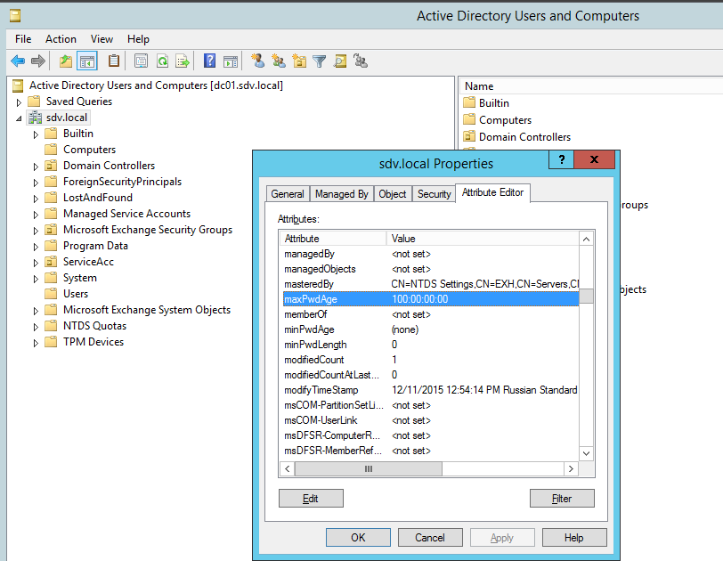

IMPORTANT: This is an internal article migrated from Support Wiki. If any changes to Configuration.xml are implied, the steps should only be performed by Tech Support in a remote session!.
Overview
NOTE: For additional information, refer to the following sources:
Password Expiration Alerting is based on the pwdLastSet attribute. There are 2 slightly different workflows, that depend on the status of the Only report on users with fine-grained policies applied checkbox in Advanced settings.
IMPORTANT: It is not possible to use both workflows simultaneously, so 2 separate Monitoring Plans would be required to accomplish this.
All information for AD is retrieved by an LDAP request to the domain object. Search base
LDAP://$domain.name.
Any DC can process the request, there's no preference.
Regular Password Policy Workflow
NOTE: This workflow is effective when the "Fine-grained" checkbox is disabled.
Regular policy is a general policy affecting all accounts in the domain.
Step 1
-
Get MaxPwdAge attribute from domain. Request path LDAP://$domain. You can also get the attribute via PowerShell:
$search = New-Object System.DirectoryServices.DirectorySearcher $search.filter = "(objectCategory=domain)" $results = $search.findall().properties $results.maxpwdageIMPORTANT: MaxPwdAge is an attribute of the domain object. It MUST be set in a GPO that applies to the whole domain.
The PDC emulator is the only DC that applies password policies. It only accepts policies linked to the domain. All other DCs completely ignore all password policies, regardless of where they are linked to or if they are enforced or whatever.
PDC Emulator is reading the info from GPO and writes this value to the domain Naming Context head (DC=domain,DC=tld). See the previous screenshot. The rest of the DCs in the domain read the info from the domain NC head (and not from GPO) and apply it.

IMPORTANT: User and computer accounts DO NOT have this attribute at all.
Step 2
-
Get pwdlastset attribute of all users in the monitored object (domain or OU), whose account state match enabled criteria (under "Advances settings').
This attribute shows when the password was changed last time. Value of 0 indicates that user will need to change his password at next logon.The following LDAP query is executed with the default PEN settings which are:
-
Include data on expiring accounts
-
Ignore user who must change password on next logon
-
Ignore users with the "Password never expires"
-
Ignore user who do not have email accounts
LDAP Request:
(&(!userAccountControl:1.2.840.113556.1.4.804:=2)(mail=*)(!(pwdLastSet=0))(sAMAccountType=805306368)(|(msds-psoapplied=*)(pwdLastSet=*)))Alternatively, you can use the following PowerShell code:
$search = New-Object System.DirectoryServices.DirectorySearcher $search.filter = "(&(!userAccountControl:1.2.840.113556.1.4.804:=2)(mail=*)(!(pwdLastSet=0))(sAMAccountType=805306368)(|(msds-psoapplied=*)(pwdLastSet=*)))" $results = $search.findall().properties $results.pwdlastset -
Step 3
-
Get current date
-
Calculate the difference between current date and pwdLastset value
-
Calculate the difference between the MaxPwdAge and the result of previous step.
-
Do the 2 and 3 for every user account queried.
Step 4
Compare results with the values specified in the product settings, add to Administrator report and send notifications accordingly.
Fine-grained password polices
This workflow is effective when the Fine-grained checkbox is checked.
Fine-grained
policy refers to a Password Settings Container object. It allows configuring different
password policies for different accounts. Learn more in
AD DS Fine-Grained Password and Account Lockout Policy Step-by-Step Guide ⸱ Microsoft
🡥.
The only real difference here is that we do not use MaxPwdAge, instead the password age
limit is received from the Password Settings Container assigned to the
user object.
It is specified in the msDS-resultantPSO attribute.
Learn more in
msDS-ResultantPSO ⸱ Microsoft 🡥.
Step 1
Get the list of users whose account state matches enabled criteria (under Advanced settings). The following LDAP query is done with the default PEA settings that are:
-
Include data on expiring accounts
-
Ignore user who must change password on next logon
-
Ignore users with the "Password never expires"
-
Ignore user who do not have email accounts
(&(!userAccountControl:1.2.840.113556.1.4.804:=2)(mail=*)(!(pwdLastSet=0))(sAMAccountType=805306368)(|(pwdLastSet=*)))Step 2
For every user in the resultant list query pwdLastSet and msDS-ResultantPSO
Step 3
For every account get MaxPwdAge from the object specified in the msDS-ResultantPSO if exists.
Step 4
-
Get current date
-
For every account calculate the difference between current date and pwdLastSet value
-
For every account calculate the difference between the MaxPwdAge specified in corresponding PSO and the result of the previous step.
Step 5
Compare results with the values specified in the product settings, add to Administrator report and send notifications accordingly.